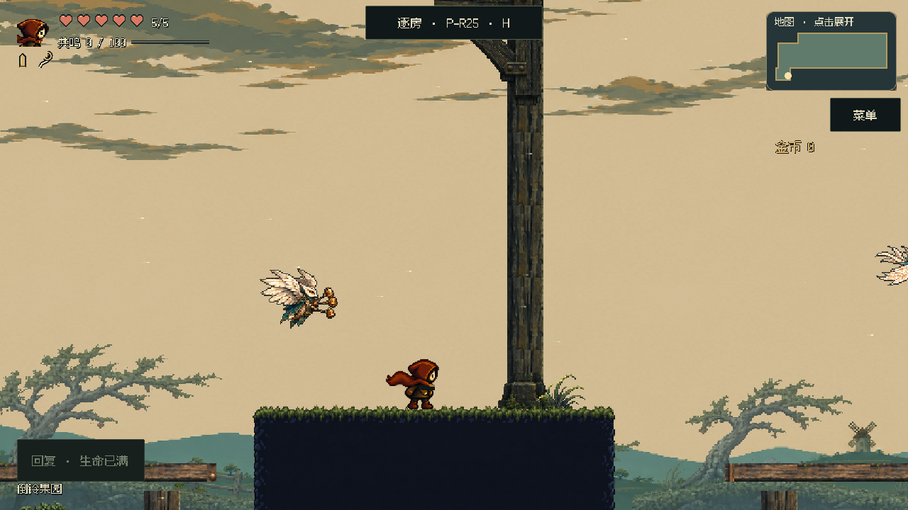
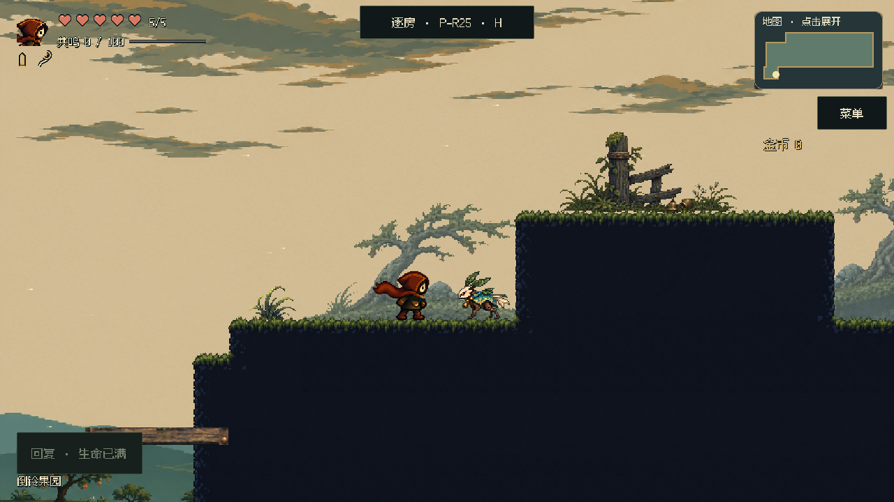
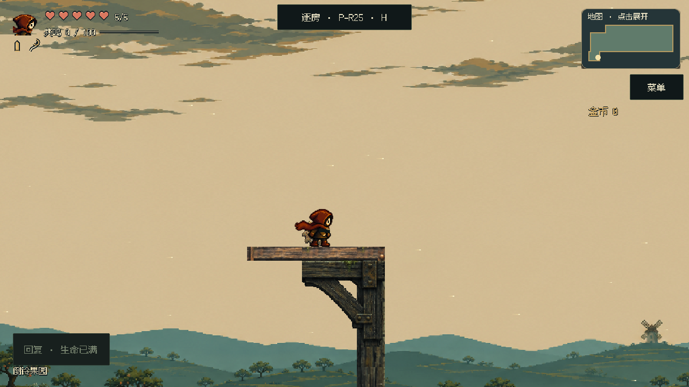
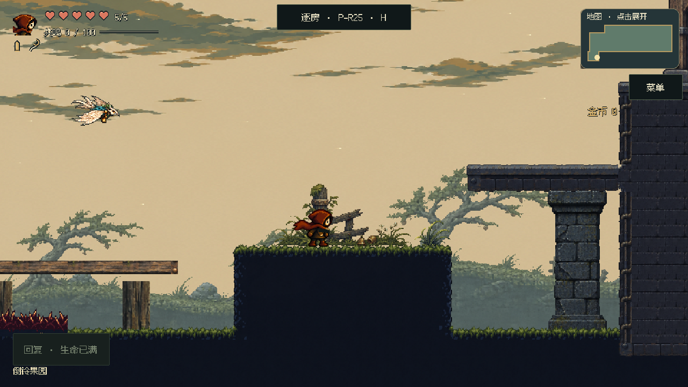
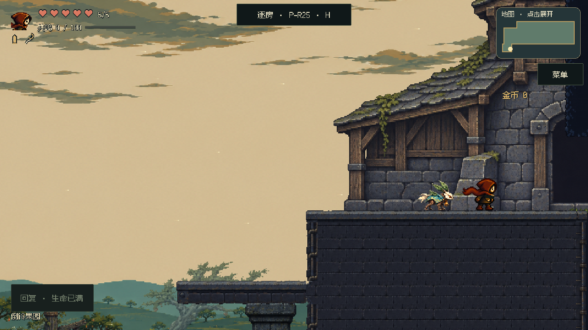
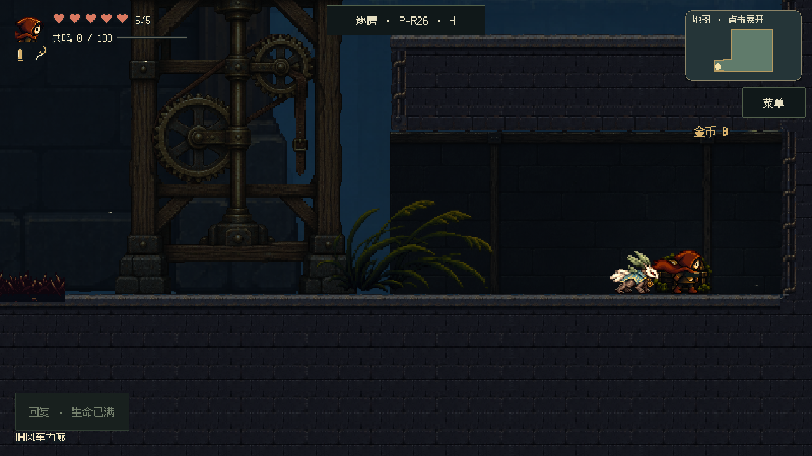

查看最新首段构图、动物居民和云层
失序之钟 · P25 倒铃果园 / P26 隐藏小室
让果园成为一个连贯的地方
正式游戏实机 · f29b692c590a · 本轮室外构图待审看
中央大树已经撤下。远处疏果林与自己的山脊一起退入景深，角色周围留出开阔动作带；高台只保留侧边木柱承接，右端门口连同石基、墙身与屋檐一起落在台地上。角色、镜头、路线、怪物与奖励保持。

三段正常速度短片
每段约4秒，可播放或单独下载，含游戏原声。使用正式控制器及局部起点；隔离普通怪物便于观察构图，高台片段保留命中回枪所需目标，不作为整房战斗验收。
高处奖励：空中命中，再次反冲
3.8秒 · 530 KiB
下载短片
果园 ↔ 风车：实际门口往返
4.2秒 · 272 KiB
下载短片
隐藏小室：进入与开箱
3.5秒 · 188 KiB
下载短片
六处前后对照
按钮切换同位置正式镜头。新版静态取景保留敌人并冻结位置，避免定位截图时怪物追到主角身上。
果园入口与低岸

高台准备岸：移除突兀大树
高处奖励台与支撑

东侧岸与门廊接近

石台上的风车入口

隐藏小室：封闭背墙接上顶板与地面

这轮检查范围
两房玩法字段保持不变，P25入口台地调整为砌体材质。已检查高台取得、双吊台动作、入口与失败恢复、灯位与镜头移动；室外树木的错误接地判断已修正，拒绝的树木不再进入运行包。
未更新关卡审核平台。美术效果仍由这次实机对照审看；实体手机帧时间与全区连续体验未在本轮验证。